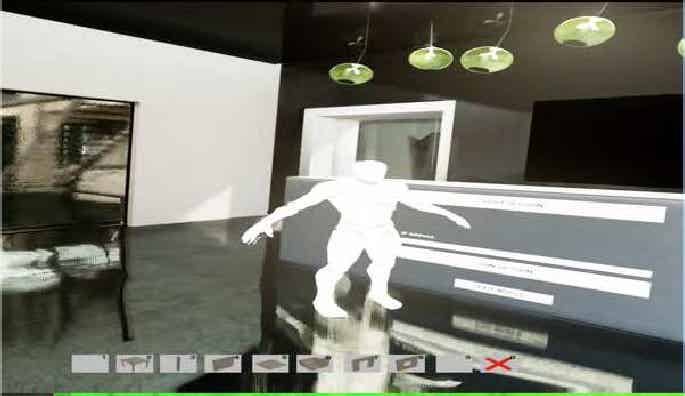
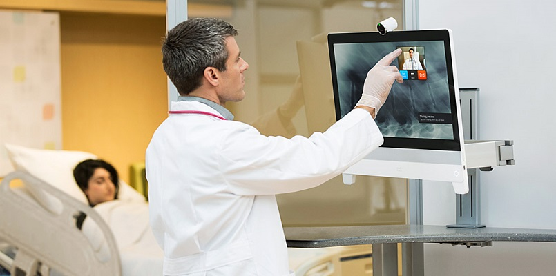
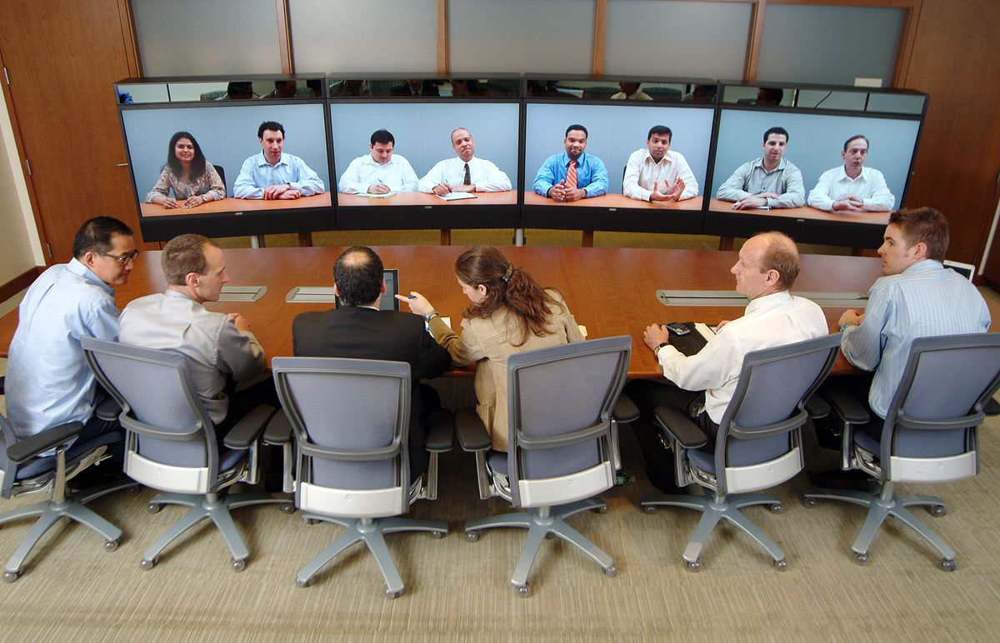

What is Collaborative Telepresence?
Colaborative Telepresence refers to technologies that allow a user appear to be present, feel like they are present or have some effect in a space the person does not physically inhabit. Telepresence can include video teleconferencing tools, where a picture and audio stream is conveyed to a remote location, as well as more involved robotics installations that can actually help a user to accomplish tasks from a remote location
In Other words, Colaborative Telepresence is the use of virtual reality technology to operate machinery by remote control or to create the effect of being at a different or imaginary location.
In this article, We will discuss Collaboratice Telepresence technology ang how it Impacts the Various Sectors of Economy
Major Telepresence Companies
The leading companies providing telepresence are as follows:- CISCO
- Polycom
- Teliris
- HP
- LifeSize
- Magor
The telepresence system allows two or more users to collaborate in real time. Users are able to collaborate using different tools within the environment such as the ability to connect online and display a web browser as well as build a virtual building. The virtual building within the environment showcases an office setting where there are interactive lights, television screens, and public browsers. The outside area allows the users to collaborate and build primitive buildings. Every userÕs virtual representation is a simple robot avatar that is static and hovers around when the navigation tools are used. To start the experience one user has to host a session using the menu at the entrance of the main building while the other user has to join the session once it has been created (see Figure 1). When a successful connection is reached, both users will be teleported to their assigned location.

Collaboration in telepresence helps reduce the cost of travel expenses and the time lost through commuting. Telepresence has taken many forms from 2D to 3D systems, from autonomous robots to augmented and virtual telepresence environments, all in an attempt to bring telepresence closer to a real life experience. With head mounted displays penetrating commercial markets, virtual telepresence systems provide new ways for collaboration. With the help of 3D scanning advancements, the exploration of integrating a hyper realistic replica of real people in a 3D environment has the opportunity to create life like avatars that function in virtual environments. This major research project presents a telepresence system that provides a virtual space for users to collaborate in real time. A user study was conducted with industry professionals to query the effectiveness of collaboration in virtual reality. Results show efficiency in simultaneous navigation and collaboration while using a virtual telepresence.
The Use of Collaborative Telepresenc be very efficient in the Following areas:
Video collaboration and telepresence technologies will play an increasingly important role in transforming the delivery of education.
Telepresence expands the learning environment by offering students a virtual window on the real world,
by reducing administration costs so more can be spent on teaching,
and offering increased equity of access to learning for all.
Antoniette Guglielmo, Ph.D.
Distance Learning Educator
Los Angeles County Museum of Art
The educational institutions are making investments and new strategies to expand their program and courses across the world to remain competitive. For instance, The Bologna Process
in Europe connects educational institutions across 46 countries and present opportunities for students to collaborate on research across multiple campuses. The institutions are focusing on better communication and collaborative technologies not only for in-situ teaching but also for distance learning. Telepresence can help institutions to meet their evolving needs and drive them into the future. It develops better collaborative process through an immersive life-like meeting experience to geographically dispersed students.
Medical providers will be able to work remotely with patients
Just like massive multiplayer online games have radically altered how people interact on the internet, collaborative telepresence could transform how people collaborate virtually in business and beyond. Medical providers, for instance, will be able to work remotely with patients as if they were in the same room. And friends and families will be able to enjoy shared experiences, such as being together in a cosy room or touring a new city, even though they are not actually in the same place.
Entertainemnt Need Advancement Too
FACE-TO-FACE meeting has been necessary for effective communication, but time, financial cost, and also environmental concerns are becoming less tolerable. Network and multimedia technologies, virtual meeting has become increasingly popular to enable more frequent and less costly person-to-person communication. However, most virtual meeting systems in both business and consumer spaces such as Skype or Cisco WebEx still provide limited and unsatisfying functionalities and hardly maintain the experience of an in-person meeting. For instance, the separate displays of remote participants fail to provide a sense of co-location as in face-to-face meetings, while their poor integration with the shared collaborative contents and virtual environments leads to limited non-verbal cues and interaction among them. To address these issues, teleimmersive (TI) systems with the vision of providing natural user experiences and interaction have attracted many research interests in the last decade [1]. High-end telepresence products such as Cisco TelePresence [2] and HP's Halo are designed to create the perception of meeting in the same physical space, which demand a proprietary installation and high-setup cost. Recently, some 3D TI systems have been developed to enhance the remote collaboration by presenting remote participants into the same 3D virtual space [3]–[5]. However, these systems still fall short of simulating a face-to-face collaboration with the presence of shared contents. Also, requiring bulky and expensive hardware with nontrivial calibration and setup hinders their wide deployment in real life. Motivated by these challenges and more, we present in this paper an Immersive Telepresence system for Entertainment and Meetings (ITEM) based on a low-cost, flexible setup (e.g., a webcam or a color plus depth camera such as Microsoft Kinect or ASUS Xtion Pro, an optional low-cost microphone array, a desktop/laptop connected to the Internet). As shown in Fig. 1, the system provides immersive
experiences by merging remote participants into the same virtual space, giving them a feeling of being there,
and seamlessly integrating them with any shared collaborative contents for a more natural person-to-person interaction as if they belong to the same physical space.